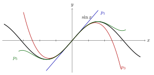

11.1 Approximating Functions with Polynomials¶
Guiding question
How does a calculator find \(\sqrt{4.2}\), \(\ln1.2\) or \(\sin0.3\)? A computer can only add, subtract, multiply and divide, and a polynomial is built from exactly those operations. So the machine replaces the function, near a chosen point, by a polynomial. This section shows how to choose the polynomial (match as many derivatives as possible at the point), how to say how good the approximation is (the remainder), and how to turn that into a guarantee such as “the error is below \(10^{-4}\)”. In later sections the polynomials are allowed to grow without end and become power series, and the remainder studied here will decide when such a series equals the function.
By the end of this section you should be able to:
-
build the linear, quadratic and higher-order Taylor polynomials of a function about any center, and explain why their coefficients are forced by matching derivatives;
-
state and prove Taylor’s Theorem with the Lagrange remainder, and the error estimate that follows from it;
-
bound the error of an approximation, and find how many terms guarantee a given accuracy;
-
explain, with an example, why a Taylor polynomial need not improve as the order grows.
From tangent lines to polynomials¶
To evaluate \(x^8-4x^5+1\) at a number we need only arithmetic. To evaluate \(\sqrt[3]{x^4-1}\), \(e^x\) or \(\sin x\) in general we do not. Polynomials are the simplest functions, so we approximate a complicated function \(f\), near a point \(a\), by a polynomial.
You already know the first step from Calculus I (linear approximation): near \(a\), the tangent line
is a good approximation to \(f\). It matches \(f\) in value and slope at \(a\): \(p_1(a)=f(a)\) and \(p_1'(a)=f'(a)\). If \(f\) bends a lot near \(a\) the tangent line soon leaves the graph. To follow the bending we add a quadratic term, \(p_2(x)=p_1(x)+c_2(x-a)^2\), and choose \(c_2\) so that \(p_2\) also matches the second derivative. Since \(p_2(a)=f(a)\) and \(p_2'(a)=f'(a)\) whatever \(c_2\) is, and \(p_2''(x)=2c_2\), the new condition \(p_2''(a)=f''(a)\) gives \(c_2=\frac12f''(a)\). Hence
Example 11.1.1: Linear and quadratic approximation
Find the linear and the quadratic approximation to \(f(x)=x^{-1/2}\) at \(a=4\), and use them to estimate \(\dfrac1{\sqrt{4.2}}\).
Solution. The derivatives are \(f'(x)=-\frac12x^{-3/2}\) and \(f''(x)=\frac34x^{-5/2}\). At \(a=4\):
Therefore
At \(x=4.2\) we have \(x-4=0.2\), so \(p_1(4.2)=0.5-0.0125=0.4875\) and \(p_2(4.2)=0.4875+\frac3{256}(0.04)=0.48796875\). The true value is \(1/\sqrt{4.2}=0.4879500\ldots\), so the errors are about \(4.5\times10^{-4}\) for \(p_1\) and \(1.9\times10^{-5}\) for \(p_2\). The quadratic term removed about \(96\%\) of the error.
Taylor polynomials¶
Continue in the same way. Having \(p_{n-1}\), add one term \(c_n(x-a)^n\) and choose \(c_n\) so that the \(n\)-th derivative matches. The \(n\)-th derivative of \(c_n(x-a)^n\) is the constant \(n!\,c_n\), and the lower derivatives of the new term vanish at \(a\), so earlier matches are not disturbed. This gives \(c_n=f^{(n)}(a)/n!\).
Definition 11.1.2: Taylor polynomial
Let \(f\) have derivatives up to order \(n\) at \(a\). The Taylor polynomial of order \(n\) of \(f\) centered at \(a\) is
Here \(f^{(0)}=f\) and \(0!=1\). When \(a=0\) it is also called the Maclaurin polynomial.
Because the new term is added on top of the old ones, \(p_n(x)=p_{n-1}(x)+\frac{f^{(n)}(a)}{n!}(x-a)^n\): the polynomials form a growing sequence. The definition is not a lucky guess; the coefficients are forced.
Theorem 11.1.3: Taylor polynomials match derivatives, and only they do
Let \(f\) have derivatives up to order \(n\) at \(a\). Then \(p_n^{(k)}(a)=f^{(k)}(a)\) for \(k=0,1,\dots,n\). Moreover, \(p_n\) is the only polynomial of degree at most \(n\) with this property.
Proof. Every polynomial \(p\) of degree at most \(n\) can be written in powers of \(x-a\), \(p(x)=\sum_{j=0}^nc_j(x-a)^j\) (expand each power \(x^i=\left((x-a)+a\right)^i\) with the binomial theorem and collect terms). Differentiating \(k\) times gives \(p^{(k)}(x)=\sum_{j=k}^nc_j\,j(j-1)\cdots(j-k+1)(x-a)^{j-k}\). At \(x=a\) every term with \(j>k\) contains the factor \((x-a)^{j-k}=0\), and the term \(j=k\) is \(c_k\,k!\). So \(p^{(k)}(a)=k!\,c_k\) for \(k=0,\dots,n\). Hence \(p^{(k)}(a)=f^{(k)}(a)\) for all \(k\le n\) holds if and only if \(c_k=f^{(k)}(a)/k!\) for all \(k\le n\), which says exactly that \(p=p_n\). This proves both statements: \(p_n\) has the property, and any polynomial of degree at most \(n\) with the property equals \(p_n\). ◻ ∎
Knowledge Check 11.1.1: Matching conditions
A function has \(f(1)=2\), \(f'(1)=-3\), \(f''(1)=4\) and \(f'''(1)=-6\). Write the Taylor polynomial \(p_3\) centered at \(1\) and use it to estimate \(f(1.1)\).
Example 11.1.4: Taylor polynomials of \(e^x\)
Find the Taylor polynomials of \(f(x)=e^x\) centered at \(0\), and use \(p_0,\dots,p_4\) to approximate \(e^{1/2}\) and \(e^{-1}\).
Solution. Every derivative of \(e^x\) is \(e^x\), and \(e^0=1\), so \(f^{(k)}(0)=1\) and \(c_k=\frac1{k!}\) for all \(k\). Hence
Evaluating (the true values are \(e^{1/2}=1.6487213\) and \(e^{-1}=0.3678794\)):
| \(n\) | \(p_n(\frac12)\) | error | \(p_n(-1)\) | error |
|---|---|---|---|---|
| 0 | \(1\) | \(0.649\) | \(1\) | \(0.632\) |
| 1 | \(1.5\) | \(0.149\) | \(0\) | \(0.368\) |
| 2 | \(1.625\) | \(0.0237\) | \(0.5\) | \(0.132\) |
| 3 | \(1.645833\) | \(0.00289\) | \(0.333333\) | \(0.0345\) |
| 4 | \(1.648438\) | \(0.000284\) | \(0.375\) | \(0.00712\) |
The errors shrink as \(n\) grows, and they are smaller at \(x=\frac12\) than at \(x=-1\) because \(\frac12\) is closer to the center \(0\). Both effects, order and distance from the center, are made precise by the remainder later in this section.
Example 11.1.5: Sine and cosine: only odd or even powers
(a) Find the Taylor polynomial \(p_7\) of \(f(x)=\sin x\) centered at \(0\). (b) Find \(p_4\) for \(g(x)=\cos3x\) centered at \(0\).
Solution. (a) The derivatives of \(\sin x\) cycle: \(\sin x,\ \cos x,\ -\sin x,\ -\cos x,\ \sin x,\dots\) At \(0\) these are \(0,1,0,-1,0,1,0,-1,\dots\) So \(f^{(k)}(0)=0\) for even \(k\), the odd ones alternate \(1,-1,1,-1\), and
(b) By the chain rule \(g'(x)=-3\sin3x\), \(g''(x)=-9\cos3x\), \(g'''(x)=27\sin3x\), \(g^{(4)}(x)=81\cos3x\). At \(0\): \(g(0)=1\), \(g'(0)=0\), \(g''(0)=-9\), \(g'''(0)=0\), \(g^{(4)}(0)=81\). So
In both parts half of the coefficients vanish, and the reason is general.

The figure shows \(\sin x\) together with \(p_1\), \(p_3\) and \(p_5\). Each higher polynomial hugs the sine curve over a longer interval around the center \(0\), and each leaves the curve sooner or later.
Theorem 11.1.6: Even and odd functions
Let \(f\) have derivatives up to order \(n\) on an interval around \(0\). If \(f\) is even (\(f(-x)=f(x)\)), then \(f^{(k)}(0)=0\) for every odd \(k\), and \(p_n\) contains only even powers of \(x\). If \(f\) is odd (\(f(-x)=-f(x)\)), then \(f^{(k)}(0)=0\) for every even \(k\), and \(p_n\) contains only odd powers.
Proof. Suppose \(f(-x)=\varepsilon f(x)\) with \(\varepsilon=1\) (even) or \(\varepsilon=-1\) (odd). Differentiate \(k\) times with the chain rule; each differentiation of \(f^{(j)}(-x)\) brings a factor \(-1\), so \((-1)^kf^{(k)}(-x)=\varepsilon f^{(k)}(x)\). Put \(x=0\): \((-1)^kf^{(k)}(0)=\varepsilon f^{(k)}(0)\). If \(f\) is even and \(k\) is odd this reads \(-f^{(k)}(0)=f^{(k)}(0)\), so \(f^{(k)}(0)=0\). If \(f\) is odd and \(k\) is even it reads \(f^{(k)}(0)=-f^{(k)}(0)\), so again \(f^{(k)}(0)=0\). The coefficient \(c_k=f^{(k)}(0)/k!\) of \(x^k\) in \(p_n\) is therefore \(0\) in those cases. ◻ ∎
So \(\sin x\) (odd) has only odd powers, and \(\cos3x\) (even) only even ones. A useful consequence: for an even function \(p_{2m+1}=p_{2m}\), and for an odd function \(p_{2m}=p_{2m-1}\), so the next derivative that matters is one order higher than it looks.
Example 11.1.7: A center other than \(0\): a fourth root
Approximate \(\sqrt[4]{85}\) with Taylor polynomials of \(f(x)=x^{1/4}\) of orders \(0,1,2,3\).
Solution. A Taylor polynomial is accurate near its center, and we must be able to compute \(f\) and its derivatives at the center exactly. Here \(81=3^4\) is close to \(85\), so take \(a=81\). Then
With \(h=x-81\), the coefficients are \(c_1=\frac1{108}\), \(c_2=-\frac1{23328}\), \(c_3=\frac7{22674816}\), and
At \(x=85\) we have \(h=4\), and each polynomial adds one more small correction. The true value is \(\sqrt[4]{85}=3.0363703\).
| \(n\) | 0 | 1 | 2 |
|---|---|---|---|
| \(p_n(85)\) | \(3\) | \(3.037037\) | \(3.036351\) |
| error | \(0.0364\) | \(0.000667\) | \(0.0000191\) |
The next polynomial gives \(p_3(85)=3.036370924\), with error \(6.5\times10^{-7}\). Each new term gains about a factor \(30\) in accuracy, because \(h=4\) is small compared with the center \(81\).
Knowledge Check 11.1.2: Choosing a center
Choose a center \(a\) for approximating each number with Taylor polynomials, and say why: (a) \(\sqrt{50}\); (b) \(\sqrt[3]{70}\); (c) \(\ln0.9\).
Theorem 11.1.8: A polynomial is its own Taylor polynomial
If \(f\) is a polynomial of degree at most \(d\), then for every center \(a\) and every \(n\ge d\) the Taylor polynomial \(p_n\) equals \(f\).
Proof. \(f\) is itself a polynomial of degree at most \(d\le n\), and trivially \(f^{(k)}(a)=f^{(k)}(a)\) for \(k=0,\dots,n\). By the uniqueness in Theorem 11.1.3, \(f=p_n\). ◻ ∎
Example 11.1.9: Rewriting a polynomial about a new center
Write \(g(x)=x^3-2x^2+5x-4\) in powers of \(x-2\).
Solution. \(g'(x)=3x^2-4x+5\), \(g''(x)=6x-4\), \(g'''(x)=6\), and \(g^{(4)}=0\). At \(a=2\) the values are \(g(2)=6\), \(g'(2)=9\), \(g''(2)=8\), \(g'''(2)=6\). So \(p_3(x)=6+9(x-2)+\frac82(x-2)^2+\frac66(x-2)^3\), and by Theorem 11.1.8
(Expanding the right side returns the original polynomial.) There is nothing left over, so the approximation is exact for every \(x\). For example, \(g(2.1)=6+0.9+0.04+0.001=6.941\).
The remainder: how good is the approximation?¶
A calculation shows that \(p_n\) is close to \(f\), but how close? The error is \(f(x)-p_n(x)\) and it has a name.
Definition 11.1.10: Remainder
The remainder of the Taylor polynomial of order \(n\) is \(R_n(x)=f(x)-p_n(x)\), so that \(f(x)=p_n(x)+R_n(x)\). The number \(\abs{R_n(x)}\) is the error in approximating \(f(x)\) by \(p_n(x)\).
The remainder can be written in a form that lets us estimate it. The proof uses Rolle’s Theorem from Calculus I: if \(g\) is continuous on \([u,v]\), differentiable on \((u,v)\) and \(g(u)=g(v)\), then \(g'(c)=0\) for some \(c\) in \((u,v)\).
Theorem 11.1.11: Taylor’s Theorem (Lagrange form of the remainder)
Let \(f\) have continuous derivatives up to order \(n+1\) on an open interval \(I\) containing \(a\). For every \(x\) in \(I\) with \(x\ne a\) there is a number \(c\) strictly between \(a\) and \(x\) such that
Proof. Fix \(x\ne a\) in \(I\) and define the number \(K\) by \(R_n(x)=K(x-a)^{n+1}\), that is, \(K=R_n(x)/(x-a)^{n+1}\). We must show \(K=f^{(n+1)}(c)/(n+1)!\) for some \(c\) between \(a\) and \(x\). For \(t\) in \(I\) let
Then \(g\) has \(n+1\) derivatives on \(I\). Zeros of \(g\). For \(k=0,1,\dots,n\) we have \(f^{(k)}(a)=p_n^{(k)}(a)\) (Theorem 11.1.3), and the \(k\)-th derivative of \((t-a)^{n+1}\) is a constant times \((t-a)^{n+1-k}\), which is \(0\) at \(t=a\) because \(n+1-k\ge1\). Hence \(g^{(k)}(a)=0\) for \(k=0,1,\dots,n\). Also \(g(x)=f(x)-p_n(x)-R_n(x)=0\) by the choice of \(K\).
Applying Rolle’s Theorem \(n+1\) times. Since \(g(a)=g(x)=0\), Rolle’s Theorem gives \(c_1\) strictly between \(a\) and \(x\) with \(g'(c_1)=0\). Now \(g'(a)=0\) and \(g'(c_1)=0\), so Rolle’s Theorem applied to \(g'\) on the interval between \(a\) and \(c_1\) gives \(c_2\) strictly between \(a\) and \(c_1\) with \(g''(c_2)=0\). Continue: if \(g^{(k-1)}(a)=0\) and \(g^{(k-1)}(c_{k-1})=0\) (with \(k-1\le n\)), Rolle’s Theorem gives \(c_k\) strictly between \(a\) and \(c_{k-1}\) with \(g^{(k)}(c_k)=0\). After \(n+1\) steps we have \(c=c_{n+1}\) with \(g^{(n+1)}(c)=0\), and \(c\) lies between \(a\) and \(x\) because each \(c_k\) lies between \(a\) and the previous one.
Reading off \(K\). The polynomial \(p_n\) has degree at most \(n\), so \(p_n^{(n+1)}=0\), and \(\frac{d^{n+1}}{dt^{n+1}}(t-a)^{n+1}=(n+1)!\). Therefore \(g^{(n+1)}(t)=f^{(n+1)}(t)-K\,(n+1)!\). Putting \(t=c\) gives \(0=f^{(n+1)}(c)-K(n+1)!\), that is \(K=f^{(n+1)}(c)/(n+1)!\), and \(R_n(x)=K(x-a)^{n+1}\) is the formula claimed. ◻ ∎
For \(n=0\) this is the Mean Value Theorem: \(f(x)=f(a)+f'(c)(x-a)\). The remainder has the shape of the next term of the Taylor polynomial, \(\frac{f^{(n+1)}(a)}{(n+1)!}(x-a)^{n+1}\), with the derivative evaluated at an unknown point \(c\) instead of at \(a\).
The point c is unknown
The theorem says that some \(c\) between \(a\) and \(x\) works; it does not say which. The number \(c\) depends on \(x\) and on \(n\), and in general it cannot be found. We never use its value. We use only the fact that it lies between \(a\) and \(x\), which lets us bound \(f^{(n+1)}(c)\).
Pause and think 11.1.1: The tangent line and the sign of \(f''\)
Take \(n=1\). Theorem 11.1.11 says \(f(x)=f(a)+f'(a)(x-a)+\frac{f''(c)}2(x-a)^2\). What does this say about the graph of \(f\) relative to its tangent line at \(a\) when \(f''>0\) on the interval? Use it to compare \(e^x\) with \(1+x\).
Answer and discussion
With \(f''>0\) on the interval, \(f''(c)>0\), so \(R_1(x)=\frac{f''(c)}2(x-a)^2\ge0\): \(f(x)\ge f(a)+f'(a)(x-a)\). The graph lies on or above its tangent line (the function is concave up, as a parabola opening upward lies above its tangents). For \(f=e^x\) and \(a=0\): \(e^x=1+x+\frac{e^c}2x^2\ge1+x\) for every \(x\). Check: \(e^{0.5}=1.6487\ge1.5\).
Theorem 11.1.12: Estimate of the remainder
Suppose \(\abs{f^{(n+1)}(c)}\le M\) for all \(c\) between \(a\) and \(x\) (inclusive). Then
Proof. If \(x=a\) then \(R_n(a)=0\) and the bound is \(0\). Otherwise, by Theorem 11.1.11 there is \(c\) between \(a\) and \(x\) with \(\abs{R_n(x)}=\frac{\abs{f^{(n+1)}(c)}}{(n+1)!}\abs{x-a}^{n+1}\). Since \(c\) lies between \(a\) and \(x\), \(\abs{f^{(n+1)}(c)}\le M\), and replacing it by \(M\) can only make the right side larger. ◻ ∎
Procedure 11.1.13: Bounding an error
-
Identify \(f\), the center \(a\), the point \(x\) and the order \(n\).
-
Compute \(f^{(n+1)}\), the derivative one order higher than the polynomial.
-
Find \(M\) with \(\abs{f^{(n+1)}(c)}\le M\) for all \(c\) between \(a\) and \(x\): look for the largest value of \(\abs{f^{(n+1)}}\) on that interval (use monotonicity, or the bound \(\abs{\sin c},\abs{\cos c}\le1\)).
-
Then \(\abs{R_n(x)}\le M\abs{x-a}^{n+1}/(n+1)!\). Any valid \(M\) gives a valid bound; a smaller \(M\) gives a sharper bound.
Example 11.1.14: Error of a sine approximation
Bound the error in approximating \(\sin0.3\) by the Taylor polynomials of \(\sin x\) centered at \(0\) of orders \(3\) and \(4\).
Solution. Every derivative of \(\sin x\) is \(\pm\sin x\) or \(\pm\cos x\), so \(\abs{f^{(n+1)}(c)}\le1\) and we can take \(M=1\) for every \(n\) and every \(c\). For \(n=3\): \(\abs{R_3(0.3)}\le\frac{0.3^4}{4!}=0.0003375\). Now \(p_3(x)=x-\frac{x^3}6\) and \(p_4=p_3\), because the coefficient of \(x^4\) is \(0\) (Theorem 11.1.6). So the same number can be bounded using \(n=4\), which gives the sharper bound
With \(p_3(0.3)=0.3-0.0045=0.2955\) we conclude \(\sin0.3=0.2955\pm0.00003\). (The true value is \(0.2955202\ldots\); the actual error is \(2.02\times10^{-5}\), almost exactly the bound.)
Example 11.1.15: A bound that needs a monotonicity argument
Approximate \(\sqrt[3]9\) with the Taylor polynomial \(p_2\) of \(f(x)=x^{1/3}\) centered at \(8\), and bound the error.
Solution. \(f(8)=2\), \(f'(x)=\frac13x^{-2/3}\) gives \(f'(8)=\frac1{12}\), and \(f''(x)=-\frac29x^{-5/3}\) gives \(f''(8)=-\frac1{144}\). So \(p_2(9)=2+\frac1{12}-\frac1{144}\cdot\frac12=2+\frac{23}{288}=\frac{599}{288}\approx2.079861\). For the error use \(n=2\), \(f'''(x)=\frac{10}{27}x^{-8/3}\). On \([8,9]\) this positive function is decreasing, so its largest value is at \(c=8\): \(M=\frac{10}{27}\cdot8^{-8/3}=\frac{10}{27\cdot256}=\frac5{3456}\). Then
The true error is \(\sqrt[3]9-p_2(9)=2.0800838-2.0798611=2.2\times10^{-4}\), within the bound, as it must be.
Pause and think 11.1.2: Two ways to shrink a bound
In \(\dfrac{M\abs{x-a}^{n+1}}{(n+1)!}\) you can change the center \(a\) or the order \(n\). Explain why moving the center closer to \(x\) helps, and why raising \(n\) usually (but not always) helps.
Answer and discussion
The factor \(\abs{x-a}^{n+1}\) is smaller when the center is closer to \(x\) (for \(\abs{x-a}<1\) it decreases geometrically with \(n\)), and \(M\) is a maximum over the interval between \(a\) and \(x\), which also gets shorter, so \(M\) usually does not increase. Raising \(n\) divides the bound by the larger factorial \((n+1)!\); this wins whenever \(M\) does not grow with \(n\), as for \(e^x\), \(\sin x\), \(\cos x\) (where \(M\) is bounded for all \(n\)). But for \(f=\frac1{1-x}\) we have \(f^{(n+1)}=\frac{(n+1)!}{(1-x)^{n+2}}\), whose size grows like \((n+1)!\) and cancels the factorial, so raising \(n\) does not help (Example 11.1.17).
Knowledge Check 11.1.3: Reading the remainder
Write the Lagrange form of \(R_4(x)\) for \(f(x)=e^x\) centered at \(0\), and use \(M=2\) (valid because \(e^c<2\) for \(c\le0.2\)) to bound \(\abs{R_4(0.2)}\).
Example 11.1.16: How many terms are enough?
How large must \(n\) be so that \(p_n(x)\) approximates \(e^x\) with error less than \(10^{-4}\) for every \(x\) in \([0,1]\)?
Solution. For \(0\le c\le1\) we have \(e^c\le e<3\), so \(\abs{f^{(n+1)}(c)}\le M=3\) and, for \(0\le x\le1\), \(\abs{x-0}^{n+1}\le1\). Hence \(\abs{R_n(x)}\le\frac3{(n+1)!}\) on the whole interval. We need \(\frac3{(n+1)!}<10^{-4}\), that is \((n+1)!>30000\). Since \(7!=5040\) and \(8!=40320\), the smallest suitable \(n\) is \(n=7\), with bound \(\frac3{8!}\approx7.4\times10^{-5}\). (For \(n=6\) the bound is \(\frac3{7!}\approx6\times10^{-4}\), which is not small enough.) So \(p_7(x)=\sum_{k=0}^7\frac{x^k}{k!}\) is accurate to within \(10^{-4}\) on \([0,1]\). For instance \(p_7(1)=\frac{685}{252}=2.718254\), and \(e=2.718282\).
When does the polynomial converge to the function?¶
For a fixed \(x\), does \(p_n(x)\to f(x)\) as \(n\to\infty\)? Two examples show that both answers occur. This question is the starting point of power series and Taylor series, which are the subject of the following sections.
Example 11.1.17: The geometric function \(1/(1-x)\)
Find \(p_n\) and \(R_n\) for \(f(x)=\frac1{1-x}\) centered at \(0\), and compare \(p_n(x)\) with \(f(x)\) at \(x=\frac12\), \(x=-1\) and \(x=2\).
Solution. \(f^{(k)}(x)=\frac{k!}{(1-x)^{k+1}}\), so \(f^{(k)}(0)=k!\) and \(c_k=1\) for all \(k\):
This is the partial sum of the geometric series with first term \(1\) and ratio \(x\) (Theorem 10.3.3). The remainder is exact, with no unknown point:
| \(n\) | \(p_n(\frac12)\) | \(p_n(-1)\) | \(p_n(2)\) |
|---|---|---|---|
| 0 | \(1\) | \(1\) | \(1\) |
| 1 | \(\frac32\) | \(0\) | \(3\) |
| 2 | \(\frac74\) | \(1\) | \(7\) |
| 3 | \(\frac{15}8\) | \(0\) | \(15\) |
| 4 | \(\frac{31}{16}\) | \(1\) | \(31\) |
| 5 | \(\frac{63}{32}\) | \(0\) | \(63\) |
| \(f(x)\) | \(2\) | \(\frac12\) | \(-1\) |
At \(x=\frac12\): \(R_n(\frac12)=\frac{(1/2)^{n+1}}{1/2}=\left(\frac12\right)^n\to0\), so \(p_n(\frac12)\to2=f(\frac12)\). At \(x=-1\): \(R_n(-1)=\frac{(-1)^{n+1}}2\) has absolute value \(\frac12\) for every \(n\); the polynomials alternate between \(1\) and \(0\) and never approach \(f(-1)=\frac12\). At \(x=2\): \(p_n(2)=2^{n+1}-1\) grows without bound, while \(f(2)=-1\). So \(p_n(x)\to f(x)\) holds for \(x=\frac12\) and fails for \(x=-1\) and \(x=2\). It is the geometric series fact (Theorem 10.3.3): \(x^{n+1}\to0\) exactly when \(\abs x<1\), and then \(R_n(x)\to0\).
Pause and think 11.1.3: Why does Taylor’s Theorem not forbid this?
In Example 11.1.17, the polynomials \(p_n(2)\) get worse as \(n\) grows, although Taylor’s Theorem seems to give \(R_n(2)=\frac{f^{(n+1)}(c)}{(n+1)!}2^{n+1}\). Which hypothesis of the theorem fails at \(x=2\)? And at \(x=-1\), where the hypotheses hold, why does the estimate not force \(\abs{R_n(-1)}\to0\)?
Answer and discussion
The theorem needs \(f\) to have continuous derivatives on an open interval \(I\) containing both \(a=0\) and \(x=2\). Such an interval contains the point \(1\), where \(f=\frac1{1-x}\) is not even defined. So the hypothesis fails, and the theorem says nothing about \(x=2\). At \(x=-1\) the hypotheses hold (take \(I=(-2,1)\)). The Lagrange form gives \(R_n(-1)=\frac{(-1)^{n+1}}{(1-c)^{n+2}}\) for some \(c\in(-1,0)\) (namely \(c=1-2^{1/(n+2)}\), since we know \(\abs{R_n(-1)}=\frac12\) exactly). The estimate gives only \(\abs{R_n(-1)}\le M_n/(n+1)!\) where \(M_n=\sup\abs{f^{(n+1)}}=\frac{(n+1)!}{(1-c)^{n+2}}\) (largest at \(c=0\)) \(=(n+1)!\), so the bound is \(1\) for every \(n\): the factorial in the numerator of \(M_n\) cancels the factorial in the denominator, and the bound never shrinks. So “\(M\) is bounded independently of \(n\)” is the extra fact that makes the remainder go to \(0\) for \(e^x\) and sine, and it fails here.
Example 11.1.18: When the remainder does go to zero: \(e^x\)
Show that for every fixed \(x\), \(R_n(x)\to0\) as \(n\to\infty\) for \(f(x)=e^x\) centered at \(0\).
Solution. Fix \(x\). All derivatives of \(e^x\) equal \(e^x\), and for \(c\) between \(0\) and \(x\), \(e^c\le e^{\abs x}\). So \(M=e^{\abs x}\) is valid for every \(n\), and Theorem 11.1.12 gives
Let \(b=\abs x+1>1\). Then \(\abs x^{\,n+1}<b^{n+1}\), and \(\frac{b^m}{m!}\to0\) as \(m\to\infty\) (Theorem 10.2.13(c)); in particular this holds for \(m=n+1\). By the Squeeze Theorem (Theorem 10.2.5), \(\abs{R_n(x)}\to0\), that is, \(p_n(x)\to e^x\). For \(x=3\) the bound is \(e^3\frac{3^{11}}{11!}\approx0.089\) already for \(n=10\), and indeed \(p_{10}(3)=20.0797\) while \(e^3=20.0855\), a difference of \(0.0059\). So for every real \(x\) the values \(p_n(x)\) approach \(e^x\). In the language of series, \(e^x=\sum_{k=0}^\infty\frac{x^k}{k!}\): a function equal to a “polynomial of infinite degree”. That is the idea behind Taylor series, developed in the sections that follow. By contrast, Example 11.1.17 shows that such an equality can hold only for some \(x\).
Example bank¶
What’s in this bank. Fourteen further worked examples, grouped by problem type and ordered from easiest to hardest within each group.
-
Linear and quadratic approximation (Examples 11.1.19–11.1.20): a square root at a perfect square; a tangent at \(\frac\pi4\).
-
Building Taylor polynomials (Examples 11.1.21–11.1.22): a product with the exponential; the sine at \(\frac\pi6\).
-
Approximating numbers (Examples 11.1.23–11.1.24): a logarithm; a fifth root with a well-chosen center.
-
The remainder for general \(n\) (Examples 11.1.25–11.1.26): \(e^{-2x}\) and \(\ln x\).
-
Error bounds (Examples 11.1.27–11.1.28): \(e^{-0.4}\) and \(\sqrt{10}\).
-
Accuracy on an interval; how many terms (Examples 11.1.29–11.1.30): cosine on \([-\frac12,\frac12]\) and \(\ln(1+x)\) on \([0,\frac12]\).
Group 1: Linear and quadratic approximation¶
Example 11.1.19: A square root at a perfect square
Find the linear and quadratic approximations to \(f(x)=\sqrt x\) at \(a=9\) and use them to estimate \(\sqrt{9.4}\).
Solution. \(f(9)=3\); \(f'(x)=\frac1{2\sqrt x}\) gives \(f'(9)=\frac16\); \(f''(x)=-\frac14x^{-3/2}\) gives \(f''(9)=-\frac1{108}\), so \(c_2=-\frac1{216}\). Hence \(p_1(x)=3+\frac{x-9}6\) and \(p_2(x)=3+\frac{x-9}6-\frac{(x-9)^2}{216}\). With \(x-9=0.4\): \(p_1(9.4)=3.066667\) and \(p_2(9.4)=3.066667-\frac{0.16}{216}=3.065926\). The true value is \(\sqrt{9.4}=3.065942\); the errors are \(7.2\times10^{-4}\) and \(1.6\times10^{-5}\).
Example 11.1.20: A tangent at \(\frac\pi4\)
Find the quadratic approximation to \(f(x)=\tan x\) at \(a=\frac\pi4\) and estimate \(\tan0.8\).
Solution. \(f'(x)=\sec^2x\) and \(f''(x)=2\sec^2x\tan x\). At \(\frac\pi4\), \(\tan=1\) and \(\sec^2=2\), so \(f=1\), \(f'=2\), \(f''=4\) and
Here \(0.8-\frac\pi4=0.014602\) (a small number, since \(\frac\pi4=0.785398\)), so \(p_2(0.8)=1+0.029204+0.000426=1.029630\), and the true value is \(\tan0.8=1.029639\).
Group 2: Building Taylor polynomials¶
Example 11.1.21: A product with an exponential
Find the Taylor polynomial \(p_4\) of \(f(x)=xe^{2x}\) centered at \(0\).
Solution. By the product rule, \(f'(x)=e^{2x}+2xe^{2x}\), \(f''(x)=4e^{2x}+4xe^{2x}\), and in general \(f^{(k)}(x)=(k\,2^{k-1}+2^kx)e^{2x}\), so \(f^{(k)}(0)=k\,2^{k-1}\): the values are \(1,4,12,32\) for \(k=1,2,3,4\), and \(f(0)=0\). Then \(c_k=\frac{k\,2^{k-1}}{k!}=\frac{2^{k-1}}{(k-1)!}\), giving \(c_1=1\), \(c_2=2\), \(c_3=2\), \(c_4=\frac43\):
Example 11.1.22: The sine centered at \(\frac\pi6\)
Find the Taylor polynomial \(p_4\) of \(f(x)=\sin x\) centered at \(a=\frac\pi6\).
Solution. The derivatives cycle through \(\sin,\cos,-\sin,-\cos\), and at \(\frac\pi6\) we have \(\sin=\frac12\), \(\cos=\frac{\sqrt3}2\). So \(f^{(k)}(\frac\pi6)\) for \(k=0,\dots,4\) is \(\frac12,\ \frac{\sqrt3}2,\ -\frac12,\ -\frac{\sqrt3}2,\ \frac12\), and dividing by \(k!\) gives the coefficients \(\frac12,\frac{\sqrt3}2,-\frac14,-\frac{\sqrt3}{12},\frac1{48}\):
Group 3: Approximating numbers¶
Example 11.1.23: A logarithm
Use the Taylor polynomial \(p_3\) of \(\ln(1+x)\) centered at \(0\) to approximate \(\ln1.2\).
Solution. \(f'(x)=\frac1{1+x}\), \(f''(x)=-\frac1{(1+x)^2}\), \(f'''(x)=\frac2{(1+x)^3}\), so \(f(0)=0\), \(f'(0)=1\), \(f''(0)=-1\), \(f'''(0)=2\) and \(p_3(x)=x-\frac{x^2}2+\frac{x^3}3\). Since \(\ln1.2=\ln(1+0.2)\) we put \(x=0.2\): \(p_3(0.2)=0.2-0.02+0.002667=0.182667\). The true value is \(0.182322\), so the error is \(3.5\times10^{-4}\).
Example 11.1.24: A fifth root with a well-chosen center
Approximate \(\sqrt[5]{30}\) using the Taylor polynomial \(p_2\) of \(f(x)=x^{1/5}\) at a suitable center.
Solution. \(32=2^5\) is the nearest perfect fifth power, so take \(a=32\). Then \(f(32)=2\), \(f'(x)=\frac15x^{-4/5}\) gives \(f'(32)=\frac1{5\cdot16}=\frac1{80}\), and \(f''(x)=-\frac4{25}x^{-9/5}\) gives \(f''(32)=-\frac4{25\cdot512}=-\frac1{3200}\). So \(c_2=-\frac1{6400}\) and
The true value is \(\sqrt[5]{30}=1.974350\), so the error is \(2.5\times10^{-5}\). (Centering at \(a=1\) instead would give no useful estimate here: \(30\) is far from \(1\).)
Group 4: The remainder for general \(n\)¶
Example 11.1.25: The remainder of \(e^{-2x}\)
Find \(R_n(x)\) for \(f(x)=e^{-2x}\) centered at \(0\) and bound \(\abs{R_3(0.1)}\).
Solution. \(f^{(k)}(x)=(-2)^ke^{-2x}\), so \(f^{(n+1)}(c)=(-2)^{n+1}e^{-2c}\) and
For \(n=3\), \(x=0.1\): \(c\in(0,0.1)\) gives \(e^{-2c}<1\), so \(\abs{R_3(0.1)}<\frac{2^4(0.1)^4}{4!}=\frac{16\cdot10^{-4}}{24}=6.7\times10^{-5}\). Indeed \(p_3(0.1)=1-0.2+0.02-0.001333=0.818667\) and \(e^{-0.2}=0.818731\), an error of \(6.4\times10^{-5}\).
Example 11.1.26: The remainder of \(\ln x\) at \(1\)
Find \(R_n(x)\) for \(f(x)=\ln x\) centered at \(1\), and bound \(\abs{R_2(1.3)}\).
Solution. \(f'(x)=x^{-1}\), \(f''(x)=-x^{-2}\), \(f'''(x)=2x^{-3}\), and in general \(f^{(k)}(x)=(-1)^{k-1}(k-1)!\,x^{-k}\). So \(f^{(n+1)}(c)=(-1)^nn!\,c^{-(n+1)}\) and
For \(n=2\) and \(x=1.3\): \(c\ge1\) gives \(c^{-3}\le1\), so \(\abs{R_2(1.3)}\le\frac{0.3^3}3=0.009\). Here \(p_2(1.3)=0.3-\frac{0.09}2=0.255\) and \(\ln1.3=0.262364\), an error of \(7.4\times10^{-3}\), within the bound.
Group 5: Error bounds¶
Example 11.1.27: A negative argument
Bound the error in approximating \(e^{-0.4}\) by the Taylor polynomial \(p_3\) of \(e^x\) centered at \(0\).
Solution. Here \(x=-0.4\), so \(c\) lies between \(-0.4\) and \(0\) and \(f^{(4)}(c)=e^c\le e^0=1\) (the exponential is increasing, so its largest value on the interval is at the right end). Take \(M=1\):
Now \(p_3(-0.4)=1-0.4+0.08-\frac{0.064}6=0.669333\) and \(e^{-0.4}=0.670320\), so the true error is \(9.9\times10^{-4}\), just inside the bound.
Example 11.1.28: A square root, first order
Use the linear approximation of \(\sqrt x\) at \(9\) to estimate \(\sqrt{10}\), and bound the error.
Solution. \(p_1(10)=3+\frac{10-9}6=\frac{19}6=3.166667\). For \(n=1\) we need \(f''(x)=-\frac14x^{-3/2}\), whose absolute value \(\frac1{4x^{3/2}}\) is decreasing on \([9,10]\), so its largest value is at \(x=9\): \(M=\frac1{4\cdot27}=\frac1{108}\). Then
The true value is \(\sqrt{10}=3.162278\), so the actual error is \(4.39\times10^{-3}\), and the bound is sharp to within about \(5\%\).
Group 6: Accuracy on an interval and how many terms¶
Example 11.1.29: Cosine on an interval
Find a bound on the error of \(\cos x\approx1-\frac{x^2}2+\frac{x^4}{24}\) for all \(x\) in \([-\frac12,\frac12]\).
Solution. The polynomial is \(p_4\) of \(\cos x\) at \(0\), and also \(p_5\) because \(\cos x\) is even (Theorem 11.1.6). Use \(n=5\): \(\abs{f^{(6)}(c)}=\abs{\cos c}\le1\), so \(M=1\) and
The bound is largest at the endpoints \(x=\pm\frac12\). Using \(n=4\) instead would give \(\frac{(1/2)^5}{120}=2.6\times10^{-4}\), more than ten times worse.
Example 11.1.30: How many terms for \(\ln(1+x)\)
How many terms of the Taylor polynomial of \(f(x)=\ln(1+x)\) centered at \(0\) guarantee an error below \(10^{-3}\) for every \(x\) in \([0,\frac12]\)?
Solution. \(f^{(n+1)}(c)=\frac{(-1)^nn!}{(1+c)^{n+1}}\), so for \(c\ge0\), \(\abs{f^{(n+1)}(c)}\le n!=M\). Then for \(0\le x\le\frac12\)
For \(n=6\) the bound is \(\frac1{896}\approx1.12\times10^{-3}\), not below \(10^{-3}\). For \(n=7\) it is \(\frac1{2048}\approx4.9\times10^{-4}\), which is. So \(n=7\) guarantees the accuracy: \(p_7(x)=x-\frac{x^2}2+\frac{x^3}3-\cdots+\frac{x^7}7\), which has seven nonzero terms. (The bound for \(n=6\) does not prove that \(p_6\) fails; it only fails to prove that it succeeds.)
Group 7: Proofs¶
Example 11.1.31: A constant multiple
Prove: if \(g=\lambda f\) for a constant \(\lambda\), then the Taylor polynomial of \(g\) of order \(n\) at \(a\) is \(\lambda\) times that of \(f\).
Plan. Unwind the definition: write the coefficients of \(g\) using \(g^{(k)}=\lambda f^{(k)}\).
Proof. Differentiating a constant multiple gives \(g^{(k)}(x)=\lambda f^{(k)}(x)\) for every \(k\) (the Constant Multiple Rule, applied \(k\) times). So the coefficient of \((x-a)^k\) in the Taylor polynomial of \(g\) is \(\frac{g^{(k)}(a)}{k!}=\lambda\frac{f^{(k)}(a)}{k!}\), and therefore \(p_n^{g}(x)=\sum_{k=0}^n\lambda\frac{f^{(k)}(a)}{k!}(x-a)^k=\lambda\,p_n^{f}(x)\). ◻ ∎
A common mistake is to forget the factor \(\lambda\) in the coefficients, or to multiply the center. For instance the Taylor polynomial of \(5e^x\) at \(0\) has coefficients \(\frac5{k!}\) (and \(5e^x\) is not \(e^{5x}\), whose coefficients are \(\frac{5^k}{k!}\)).
Example 11.1.32: The derivative of a Taylor polynomial
Prove: if \(n\ge1\) and \(p_n\) is the Taylor polynomial of \(f\) of order \(n\) at \(a\), then \(p_n'\) is the Taylor polynomial of \(f'\) of order \(n-1\) at \(a\).
Plan. Differentiate \(p_n\) term by term and compare coefficients, using the formula for coefficients (Theorem 11.1.3).
Proof. We have \(p_n(x)=\sum_{k=0}^n\frac{f^{(k)}(a)}{k!}(x-a)^k\), so \(p_n'(x)=\sum_{k=1}^nk\,\frac{f^{(k)}(a)}{k!}(x-a)^{k-1}\) (the constant term disappears). Since \(\frac k{k!}=\frac1{(k-1)!}\), putting \(j=k-1\) this is \(\sum_{j=0}^{n-1}\frac{f^{(j+1)}(a)}{j!}(x-a)^j\). For the function \(f'\) we have \((f')^{(j)}=f^{(j+1)}\), so the Taylor polynomial of \(f'\) of order \(n-1\) is \(\sum_{j=0}^{n-1}\frac{(f')^{(j)}(a)}{j!}(x-a)^j=\sum_{j=0}^{n-1}\frac{f^{(j+1)}(a)}{j!}(x-a)^j\), the same polynomial. ◻ ∎
For example, differentiating \(p_5(x)=x-\frac{x^3}6+\frac{x^5}{120}\) for \(\sin x\) gives \(1-\frac{x^2}2+\frac{x^4}{24}\), which is \(p_4\) for \(\cos x=\frac d{dx}\sin x\). The reverse (integrating) needs one more idea, the constant of integration, and is not claimed.
Answers and discussion¶
Knowledge Check 11.1.1. \(c_k=\frac{f^{(k)}(1)}{k!}\) gives \(c_0=2\), \(c_1=-3\), \(c_2=\frac42=2\), \(c_3=\frac{-6}6=-1\), so \(p_3(x)=2-3(x-1)+2(x-1)^2-(x-1)^3\). At \(x=1.1\): \(p_3(1.1)=2-0.3+0.02-0.001=1.719\).
Knowledge Check 11.1.2. Choose a center near the point where \(f\) and its derivatives are easy to evaluate exactly. (a) \(a=49\), since \(\sqrt{49}=7\). (b) \(a=64\), since \(\sqrt[3]{64}=4\) (and \(70\) is close to \(64\); the center \(27\) is too far). (c) \(a=1\), since \(\ln1=0\) and \(0.9\) is close to \(1\). (The center must be a number where the function is defined with easy values; a center like \(a=0\) is impossible for \(\ln x\).)
Knowledge Check 11.1.3. \(f^{(5)}(x)=e^x\), so \(R_4(x)=\frac{e^c}{5!}x^5\) with \(c\) between \(0\) and \(x\). With \(M=2\) and \(x=0.2\): \(\abs{R_4(0.2)}\le\frac{2\cdot0.2^5}{120}=\frac1{187500}\approx5.3\times10^{-6}\).